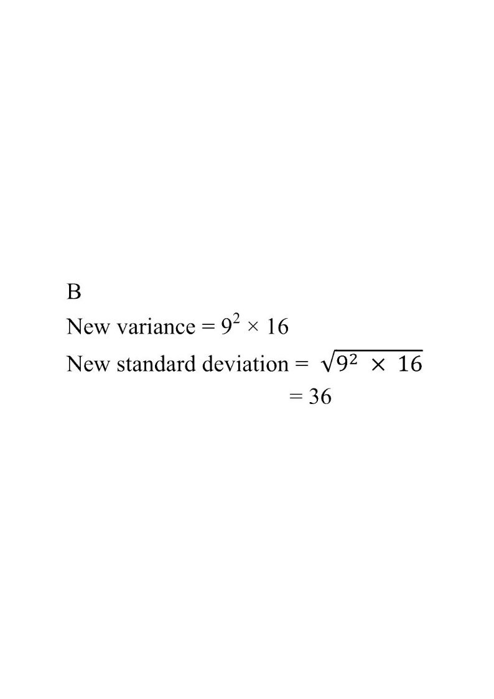

Variance & Standard Deviation — Scaling & Shifting
Original data $x_i$ (var $=16$)Transformed $9x_i-5$ (var $=9^2\times16$)Mean mark
Step 1: variance of x = 16 → sd of x = 4
HKDSE 2024 · Paper 2 · Q45
Statistics
If the variance of the seven numbers
\[x_1,\;x_2,\;x_3,\;x_4,\;x_5,\;x_6 \text{ and } x_7\]
is $16$, then the standard deviation of the seven numbers
\[9x_1-5,\;9x_2-5,\;9x_3-5,\;9x_4-5,\;9x_5-5,\;9x_6-5,\;9x_7-5\]
is

Figure (original exam diagram)
A. $31$
B. $36$
C. $139$
D. $144$
Step 1 — Read the given information
Variance and Standard Deviation\(\sigma=\sqrt{\operatorname{Var}(x)}\)Take the square root of the given variance to get the standard deviation.
The variance of the seven numbers $x_1, x_2, \ldots, x_7$ is
\[\operatorname{Var}(x) = \sigma_x^2 = 16 .\]
So the standard deviation of the $x_i$'s is
\[\sigma_x = \sqrt{16} = 4 .\]
Hint: Always convert the given variance to standard deviation first — the question asks for a standard deviation.
Step 2 — Effect of adding / subtracting a constant
For the new variable $Y = 9X - 5$, the “$-5$” is a shift of every data value by the same amount. A shift moves the mean but does not change the spread:
In particular the constant $b=-5$ contributes nothing to the variance.
Hint: Adding or subtracting the same number to every datum never changes the variance or standard deviation.
Step 3 — Effect of multiplying by a constant
Effect of a Linear Transformation on Standard Deviation\(\sigma(ax+b)=a\,\sigma(x)\quad(a>0)\)Adding a constant does not change the spread, and multiplying by the positive constant \(a\) multiplies the standard deviation by \(a\).
The “$9$” is a stretch of the scale. Every deviation from the mean is multiplied by $9$, so the variance is multiplied by $9^2$: